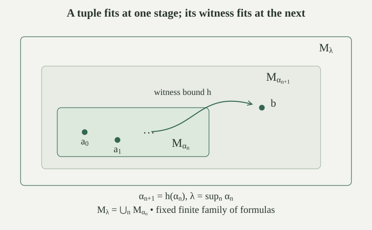

An existential statement can acquire a witness in a larger rank stage. We will select heights at which this does not happen for a chosen finite collection of statements. The basic argument works in ambient ZF; the countable-model application below uses ambient ZFC.
A definable continuous transitive hierarchy is a definable class function \(\alpha\mapsto M_\alpha\), assigning a set to each ordinal, such that each \(M_\alpha\) is transitive, \(M_\alpha\subseteq M_\beta\) for \(\alpha\le\beta\), and
Let \(M=\bigcup_{\alpha\in\mathrm{Ord}}M_\alpha\), and assume \(M\ne\varnothing\). Here a class function is specified by a formula with fixed set parameters and uniquely determined set values. The union is a definable class, possibly a set; its members are exactly the objects appearing at some level. It is transitive because every level is transitive. The rank hierarchy is the main example.
Fix a finite family \(\mathcal F\) of membership-language formulas. Expand logical abbreviations using atoms, negation, conjunction and existential quantification, then close the family under subformulas. This remains finite. At an existential subformula, its body is considered with its newly available variable as an additional parameter. Rename variables when needed to keep these roles distinct.
A nonempty level \(M_\alpha\) reflects \(\mathcal F\) from \(M\) if for every \(\varphi\in\mathcal F\) and every assignment \(\bar a\) of its free variables in \(M_\alpha\),
When \(M\) is a proper class, the right side means the particular relativized formula \(\varphi^M(\bar a)\). Because the family is fixed and finite, its finitely many truth conditions are ordinary formulas available for Separation and Replacement. No truth predicate for all formulas of a proper class is being assumed.
For every ordinal \(\alpha\), there is a uniquely specified ordinal \(h(\alpha)>\alpha\) such that the following holds for every existential member \(\exists x\,\psi(x,\bar y)\) of \(\mathcal F\): if \(\bar a\) lies in \(M_\alpha\) and \(M\models\exists x\,\psi(x,\bar a)\), then some \(b\in M_{h(\alpha)}\) satisfies \(M\models\psi(b,\bar a)\).
For that formula and parameter tuple, if a witness exists in \(M\), let \(\beta\) be the least ordinal such that some witness belongs to \(M_\beta\). Such a level exists because every object of \(M\) appears at a level. A least one can be found among ordinals up to any witnessing level. If there is no witness, assign the bound \(0\).
For each existential formula, its parameter tuples from \(M_\alpha\) form a set, including the singleton family of empty tuples when there are no parameters. The bound is uniquely defined by a fixed formula. Replacement collects all these ordinals, and the finite union over the chosen formulas is a set \(B_\alpha\). Define
This ordinal exceeds \(\alpha\) and every collected bound. Monotonicity of the hierarchy therefore puts each required witness in \(M_{h(\alpha)}\). The rule is uniquely specified even if the family has no existential formulas. It chooses least ordinal bounds, never a simultaneous family of witness objects, so this step needs no Choice.
For every ordinal \(\theta\), there is a nonzero limit \(\lambda>\theta\) with \(M_\lambda\ne\varnothing\) such that every true \(M\)-existential from \(\mathcal F\), at parameters in \(M_\lambda\), has a witness in \(M_\lambda\) whose matrix is true in \(M\).
Choose \(\alpha_0>\theta\) at which the hierarchy is nonempty. Such a level exists since \(M\ne\varnothing\); enlarge its index if necessary. Define \(\alpha_{n+1}=h(\alpha_n)\) by set-valued recursion, and put \(\lambda=\sup_{n\in\omega}\alpha_n\). Replacement collects the sequence. It is strictly increasing, so each \(\alpha_n<\lambda\) and \(\lambda\) is a nonzero limit above \(\theta\).
Continuity and monotonicity give \(M_\lambda=\bigcup_{n\in\omega}M_{\alpha_n}\): a member of \(M_\lambda\) appears below some \(\xi<\lambda\), and cofinality of the sequence gives \(\xi\le\alpha_n\) for some \(n\). For any finite parameter tuple in \(M_\lambda\), take the maximum of its finitely many stage indices. All its entries then lie in one \(M_{\alpha_n}\); for an empty tuple use \(n=0\).
If an existential statement about that tuple holds in \(M\), the witness-bound property supplies a witness in \(M_{\alpha_{n+1}}\). This is contained in \(M_\lambda\), proving the assertion.

For a definable continuous transitive hierarchy with nonempty union \(M\), every fixed finite family \(\mathcal F\) of formulas and every ordinal \(\theta\) admit \(\lambda>\theta\) such that \(M_\lambda\ne\varnothing\) and
for every \(\varphi\in\mathcal F\) and every allowed parameter tuple \(\bar a\) in \(M_\lambda\). The union class \(M\) is not required to satisfy ZF.
Use the finite subformula closure and the level \(\lambda\) from . Induct on the chosen formulas, with the induction assertion for every assignment in \(M_\lambda\). Equality and membership atoms agree because both domains use actual membership. Negation and conjunction preserve agreement.
For \(\exists x\,\psi(x,\bar a)\), a witness in \(M_\lambda\) transports to an \(M\)-witness by the induction hypothesis for \(\psi\). Conversely, if \(M\) satisfies the existential, the closure property supplies \(b\in M_\lambda\) with \(M\models\psi(b,\bar a)\). The induction hypothesis makes this matrix true in \(M_\lambda\), giving the desired existential there. Both hypotheses are applicable because \(\psi\) belongs to the subformula closure and all its parameters, including \(b\), lie in the smaller domain.
This proves agreement for the expanded family and hence for the originally specified formulas. The construction used definability and the ambient set axioms to collect bounds. It did not use any axioms assumed true in the union class.
The constructible hierarchy supplies another such continuous transitive hierarchy. Reflection applies to its union without presupposing the later inner-model axiom proof.
Its use in Separation inside L comes before the conclusion that L satisfies ZF.
For the finite family closed under subformulas, let \(C_{\mathcal F}\) be the class of ordinals whose nonempty levels reflect it. This is a closed unbounded class of ordinals: above every ordinal there is a member, and if \(\lambda>0\) is a limit ordinal with \(C_{\mathcal F}\cap\lambda\) unbounded in \(\lambda\), then \(\lambda\in C_{\mathcal F}\).
Unboundedness is . For closedness, continuity says that every finite parameter tuple in \(M_\lambda\) appears in some earlier level. Choose a reflecting \(\alpha<\lambda\) above its finitely many appearance indices, possible by the cofinality assumption. Nonemptiness of such a level also makes \(M_\lambda\) nonempty.
Prove agreement at \(M_\lambda\) by formula induction. The atom and Boolean cases are unchanged. If \(M\models\exists x\,\psi(x,\bar a)\), choose such a reflecting \(\alpha\) containing \(\bar a\). Reflection of that existential supplies \(b\in M_\alpha\) with \(M_\alpha\models\psi(b,\bar a)\); reflection of its matrix gives \(M\models\psi(b,\bar a)\). Since \(b\in M_\lambda\), the induction hypothesis at \(\lambda\) makes its matrix true there. The forward existential direction uses any smaller-domain witness and the same induction hypothesis. Thus every formula agrees at \(\lambda\).
For a family not already closed under subformulas, the closed unbounded class obtained from its finite closure still supplies simultaneous reflection of the original formulas.
For every fixed finite family \(\mathcal F\) of membership formulas, there are arbitrarily large limit ordinals \(\lambda\) such that \(V_\lambda\) agrees with the ambient universe on every formula in \(\mathcal F\), at every parameter tuple in \(V_\lambda\).
The stages \(V_\alpha\) are definable, transitive, increasing and continuous. Every set belongs to some stage, by rank exhaustion, so their union class is \(V\). The general construction gives the required nonzero limit heights above any starting ordinal. Relativization to \(V\) is each original formula itself, with its quantifiers ranging over all sets.
Bounded formulas already agree at every nonempty transitive stage by bounded absoluteness. Reflection supplies specially chosen stages for the additional unbounded quantifiers in the fixed family.
For every nonzero limit ordinal \(\lambda\), the actual-membership structure on \(V_\lambda\) satisfies Extensionality, Foundation, Empty Set, Pairing and Union.
The set \(\varnothing\) belongs to \(V_\lambda\), since its rank is zero. Thus the structure is nonempty and has an empty set. If two of its objects have equal members inside the domain, transitivity ensures that these are all their actual members; ambient Extensionality identifies them. For an internally nonempty \(a\in V_\lambda\), ambient Foundation supplies a member \(b\in a\) disjoint from \(a\). Transitivity puts \(b\) in the domain, and actual disjointness excludes every internal common member, proving internal Foundation.
For \(x,y\in V_\lambda\), the pair \(\{x,y\}\) and union \(\bigcup x\) belong to \(V_\lambda\) by the rank bounds for operations at a limit. Their actual membership conditions give the corresponding internal axioms; all potential members are present by transitivity.
For every nonzero limit \(\lambda\), the structure on \(V_\lambda\) satisfies every instance of Separation and the Power Set axiom. Its power set of any \(a\in V_\lambda\) is the full ambient \(\mathcal P(a)\).
Fix one formula \(\psi(x,\bar p)\), its parameters \(\bar p\) in \(V_\lambda\), and \(a\in V_\lambda\). Ambient Separation forms \(b=\{x\in a:\psi^{V_\lambda}(x,\bar p)\}\). Because \(b\subseteq a\), its rank is at most the rank of \(a\), so \(b\in V_\lambda\). Relativized satisfaction identifies its defining condition with the requested internal Separation instance. This construction works for each fixed formula.
The actual \(\mathcal P(a)\) belongs to \(V_\lambda\), since its rank is \(\operatorname{rank}(a)+1<\lambda\). Every subset \(z\subseteq a\) also belongs to \(V_\lambda\), by the same subset-rank bound. At any candidate \(z\) from the domain, the bounded subset test agrees with the ambient test. Therefore the actual power set has exactly the internally required members, and none of the ambient subsets is missing.
The domain \(4\) in the finite power-set counterexample has no such rank-stage closure guarantee. Transitivity alone did not supply its missing subsets.
When does the preceding rank argument also supply Infinity? Why does the Separation proof not already prove every Replacement instance?
If \(\lambda>\omega\), then \(\omega\in V_\lambda\) because its rank is \(\omega\). Its zero and every finite successor are present, and their defining membership equations hold in the structure, so \(\omega\) witnesses Infinity. At \(\lambda=\omega\), every member of \(V_\omega\) is hereditarily finite. An inductive set contains every finite ordinal and is infinite, so no such member can witness Infinity.
Separation produces a subset of the supplied set \(a\), giving its rank bound immediately. Replacement instead collects outputs of a formula uniquely defining one object for each member of \(a\). Although each output lies in \(V_\lambda\), the ranks of all the outputs must be bounded below \(\lambda\) to put their collected range there. No such bound follows from the subset argument, because the outputs need not be members of \(a\). The earlier closure proofs therefore leave Replacement as an additional requirement. A fixed finite list of its instances can instead be included in the reflection family.
At an inaccessible height, every object has smaller cardinality, and regularity bounds all the output ranks. This gives Replacement for every fixed formula in the same rank stage.
Work in ambient ZFC and fix a finite list \(\Gamma\) of ZFC axioms, choosing particular instances wherever a schema is involved. There is a limit \(\lambda\) with \(V_\lambda\models\Gamma\), and there is a countable transitive set \(T\) whose membership structure satisfies \(\Gamma\).
Add Extensionality to the finite list. Rank reflection gives \(\lambda>\omega\) reflecting these sentences. Each listed axiom holds in the ambient universe, so it holds in \(V_\lambda\). The membership language is countable. Apply downward Löwenheim–Skolem to obtain a nonempty countable elementary substructure \(H\preccurlyeq(V_\lambda,\in)\). It satisfies \(\Gamma\) and Extensionality.
The relation on \(H\) is actual membership restricted to this set of objects, so it is externally well-founded by ambient Foundation, even though \(H\) need not be transitive. Its internal Extensionality says that this relation is extensional. Apply the Mostowski model collapse to get an isomorphism onto a nonempty transitive set \(T\). The same isomorphism preserves every sentence of \(\Gamma\), and its bijectivity preserves countability.
This is a corollary schema: for each fixed finite list one obtains the corresponding construction and proof. It does not assert here a single internal theorem quantifying over all coded finite subsets of ZFC, or produce a model of the full theory from a consistency assertion.
Can the general reflection theorem apply when the union fails Infinity? Consider the constant hierarchy \(M_\alpha=\{\varnothing\}\) at every ordinal.
Yes. Every level is a transitive set, the hierarchy is increasing and continuous at nonzero limits, and its nonempty union is the same singleton. Every level has exactly the same membership structure as the union, so it reflects every chosen finite family. The only object is empty and cannot be inductive, so the union does not satisfy Infinity.
The reflection proof collects bounds in the ambient theory. Its hierarchy assumptions and fixed formula relativizations suffice; there is no requirement that the union already satisfy the axioms later being investigated.
Each fixed finite family has arbitrarily high reflecting stages. Does choosing one such stage for each family already give a single stage that reflects every membership formula?
No such conclusion follows from those choices. The assertion has the order “for each finite family, there is a height,” and the height may depend on the family. Exchanging those quantifiers would require another argument. Even the elementary assertions “for every natural number \(n\), there is \(k\ge n\)” do not give one natural number at least every \(n\).
There is also a definability boundary in the construction: for a fixed finite family, its finitely many relativized truth conditions can be written down and used in Replacement. Applying that step simultaneously to all formulas of a proper class would require a uniform truth condition that this argument does not provide. Thus the corollary about finite axiom fragments keeps its specified finite list; the missing full transitive-model implication has not been obtained.